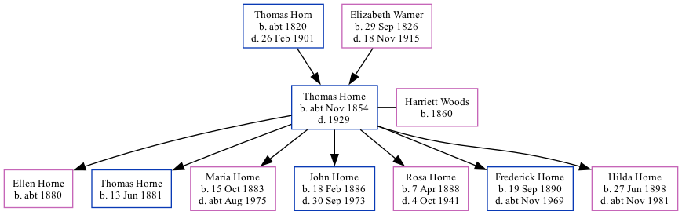

Thomas Warner Horne cNov 1854 - 1929
[ Home ] | [ Calendar ] | [ Surnames Index ] | [ Family History ]A brewer's drayman and the child of Thomas Horn (a farm bailiff) and Elizabeth Warner (a general shopkeeper), Thomas Horne, the great-great-uncle of Nigel Horne, was born in Bromstone, St Peters, Thanet, Kent, England c. Nov 18541, was baptized in St Peters, Thanet, Kent, England on Dec 10, 1854 and married Harriett Woods (with whom he had 7 children: Ellen, Thomas William, Maria Annie, John Christopher, Rosa Emily, Frederick Sidney and Hilda Alice) in St Pancras, London, England around Nov 18782.
Throughout his life, Thomas lived in several places: at Derby Buildings in St Pancras on Apr 3, 18813; at Britannia Street in St Pancras on Mar 31, 19014; and at 25 Derby Buildings in St Pancras on Apr 2, 19115 and on Jun 19, 19216.
He died in 1929 in St Pancras.
Parents
- Thomas was born c. 1820
- Elizabeth Ann was born on Sep 29, 1826
Children
- Ellen was born c. 1880
- Thomas William was born on Jun 13, 1881
- Maria Annie was born on Oct 15, 1883
- John Christopher was born on Feb 18, 1886
- Rosa Emily was born on Apr 7, 1888
- Frederick Sidney was born on Sep 19, 1890
- Hilda Alice was born on Jun 27, 1898
Citations
- England & Wales births 1837-2006 - Findmypast
- England & Wales Marriages 1837-2005 - Findmypast
- 1881 England, Wales & Scotland Census - Findmypast (was age 26 and the head of the household)
- 1901 England, Wales & Scotland Census - Findmypast (was age 46 and the head of the household)
- 1911 Census for England & Wales - Findmypast (was age 56 and the head of the household)
- 1921 Census Of England & Wales - Findmypast (was age 66 and the head of the household)
Media
1871 England, Wales & Scotland Census Transcription - GBC-1871-0014275839
England & Wales births 1837-2006 Transcription - BMD-B-1854-4-DM-000767-032
1881 England, Wales & Scotland Census - GBC/1881/0000962512
England & Wales marriages 1837-2005 - BMD/M/1878/4/AZ/000150/191
Family Tree
Generated by Ged2Site. Last updated on Jul 20, 2025